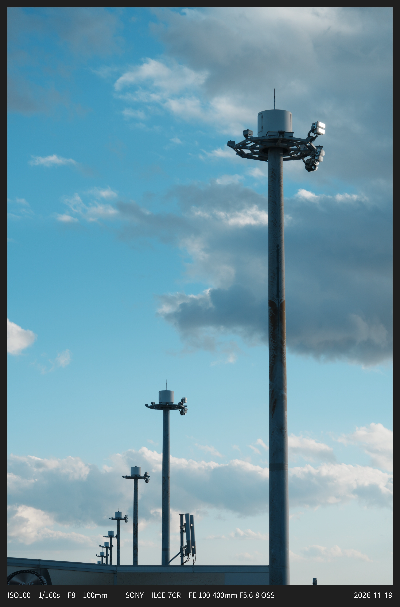
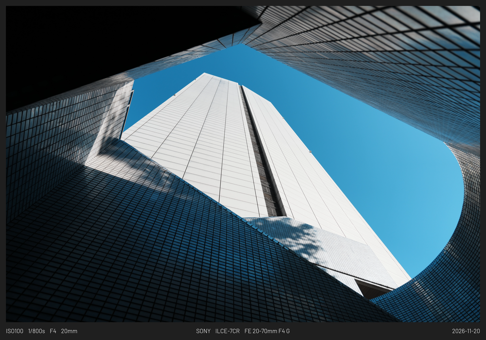
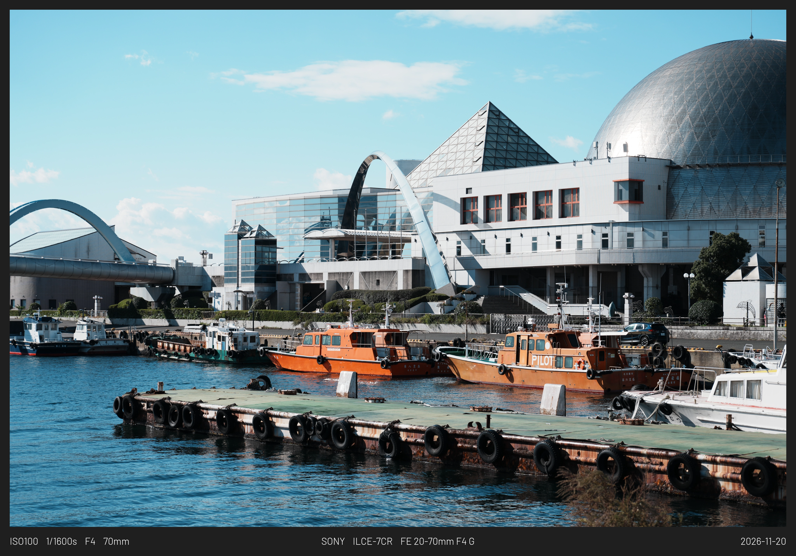
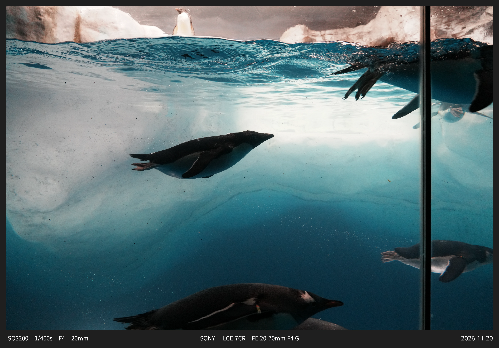
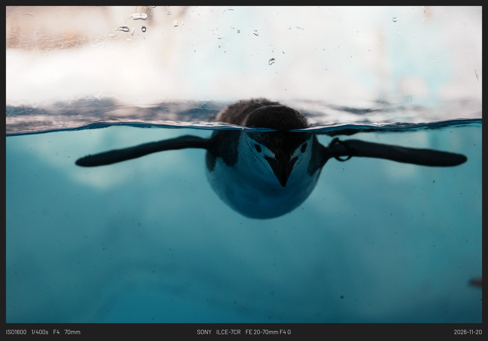
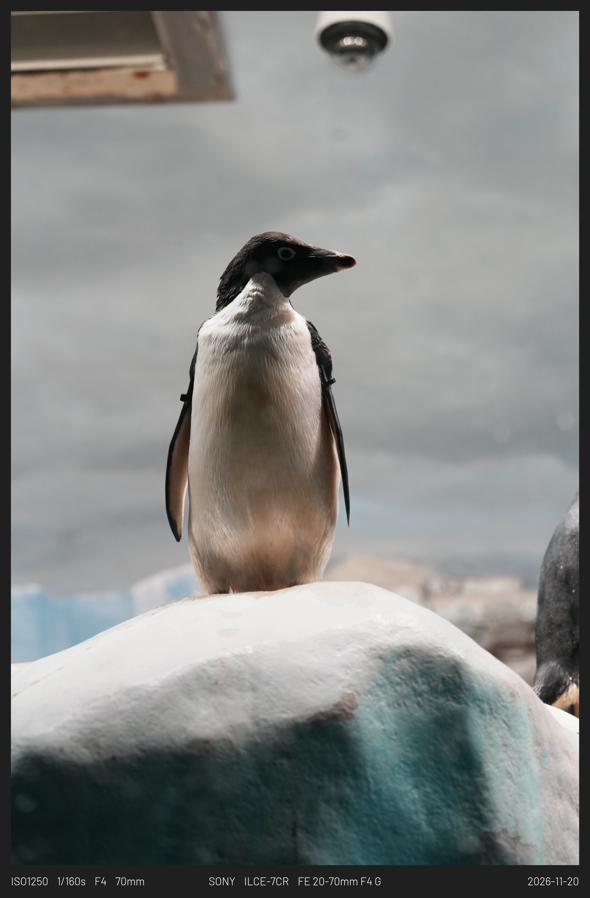
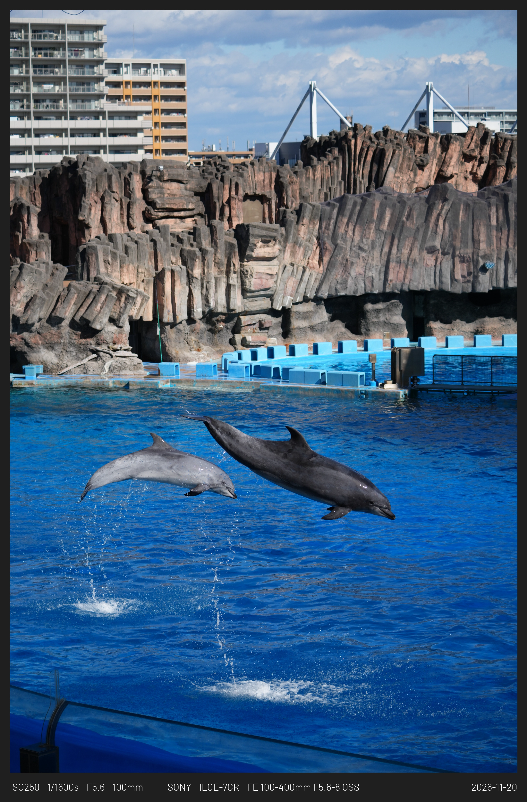
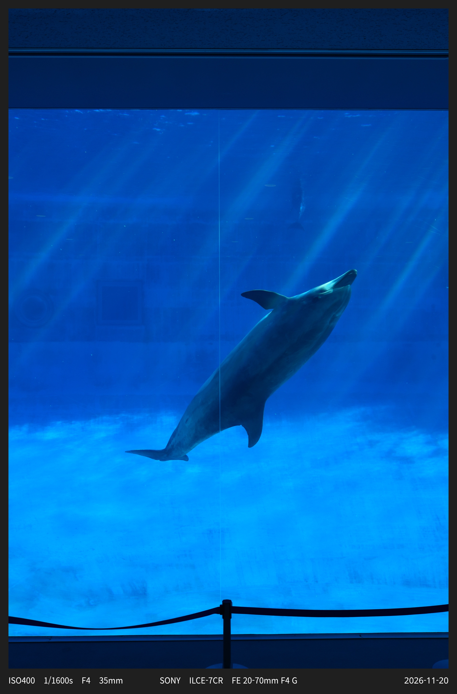
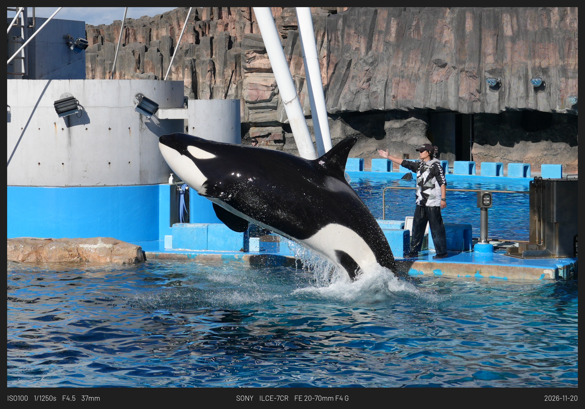
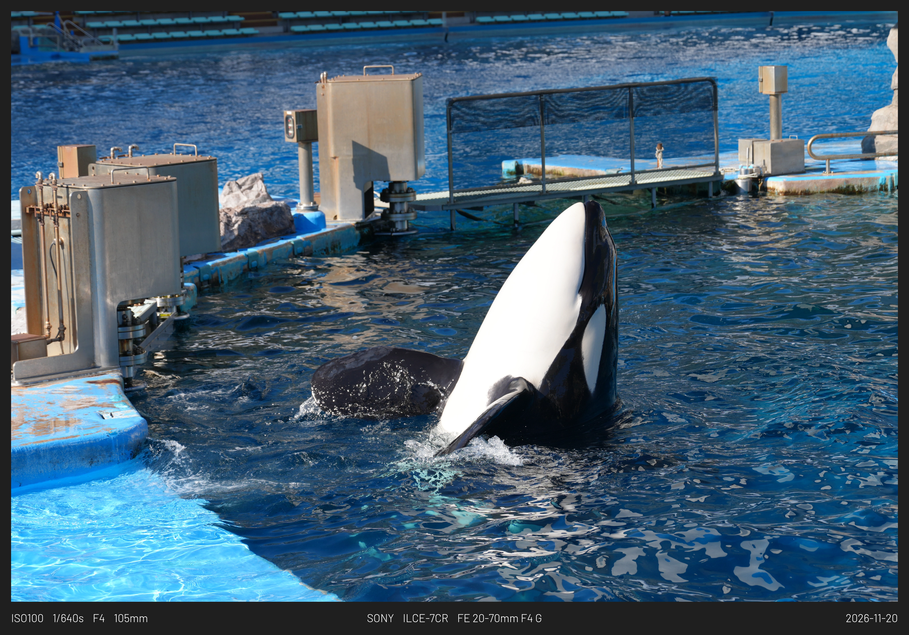
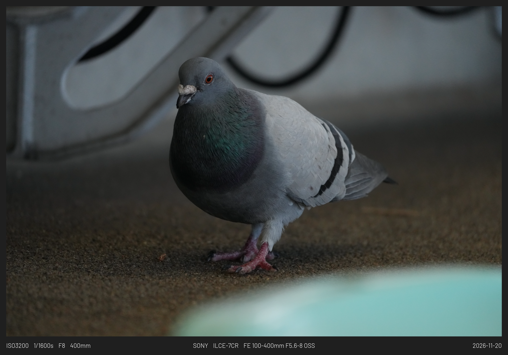
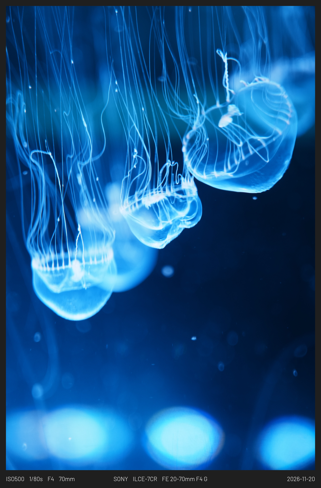
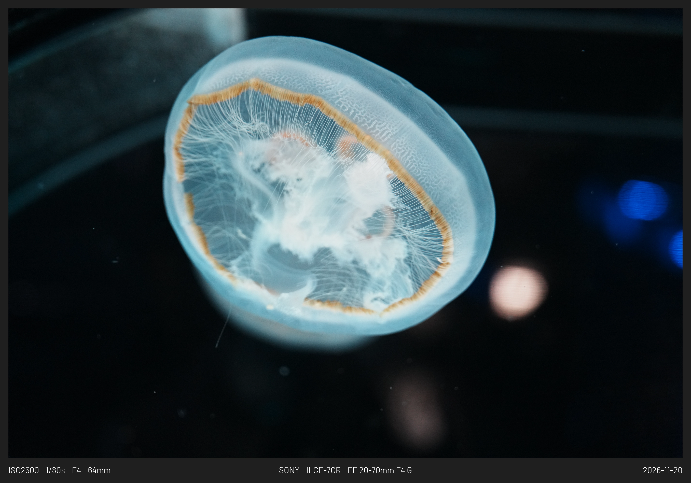
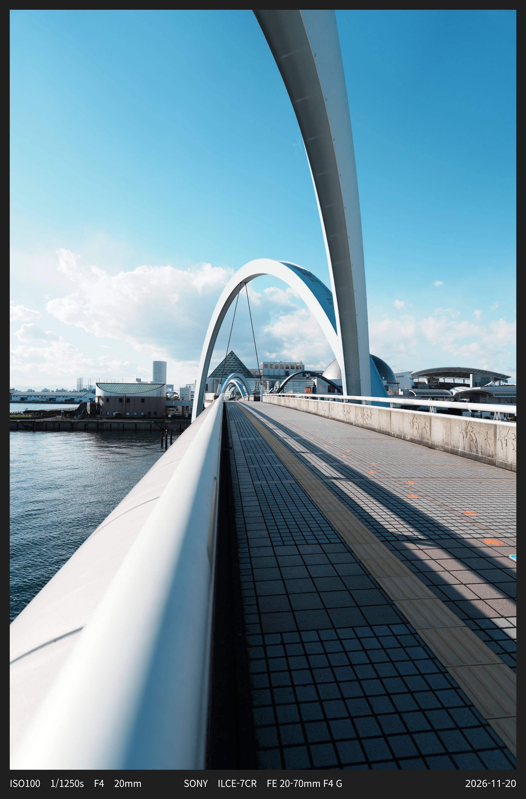
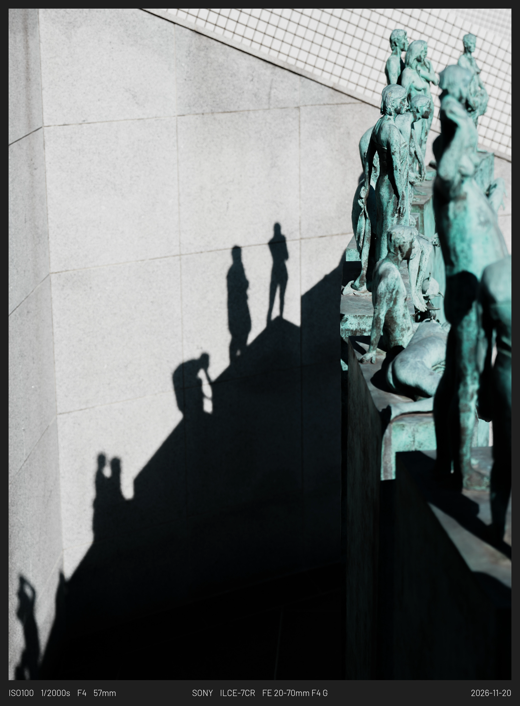
11.19-23 4박5일















댓글
수집 당시 댓글 28개
Distagon · 11.20 23:55:38
피스오브마인드 · 11.21 00:00:10
· Sheldon · 11.21 00:01:52
· 피스오브마인드 · 11.21 00:03:05
아조씨 · 11.21 00:02:02
ㅇㅇ · 11.21 00:29:47
봇치쟝 · 11.22 21:15:55
암타황제강시현 · 11.22 21:16:22
· 이모티콘수집 · 11.22 21:17:46
이모티콘수집 · 11.22 21:17:15
· 암타황제강시현 · 11.22 21:18:49
Op.9-No.2 · 11.22 21:21:33
형아어디가 · 11.22 21:24:10
· 형아어디가 · 11.22 21:24:35
· 형아어디가 · 11.22 21:24:54
· 형아어디가 · 11.22 21:24:56
· 형아어디가 · 11.22 21:25:11
· 형아어디가 · 11.22 21:25:25
돌아온애우 · 11.22 21:33:05
히이잉 · 11.22 22:35:17
ㅇㅇ · 11.22 22:44:17
ㅇㅇ · 11.22 23:35:44
ㅇㅇ · 11.22 23:39:20
ㅇㅇ · 11.23 00:31:50
느금마 · 11.23 02:02:10
ㅇㅇ · 11.23 02:10:32
ㅇㅇ · 11.23 02:10:35
바이젠셀 · 11.23 16:06:44